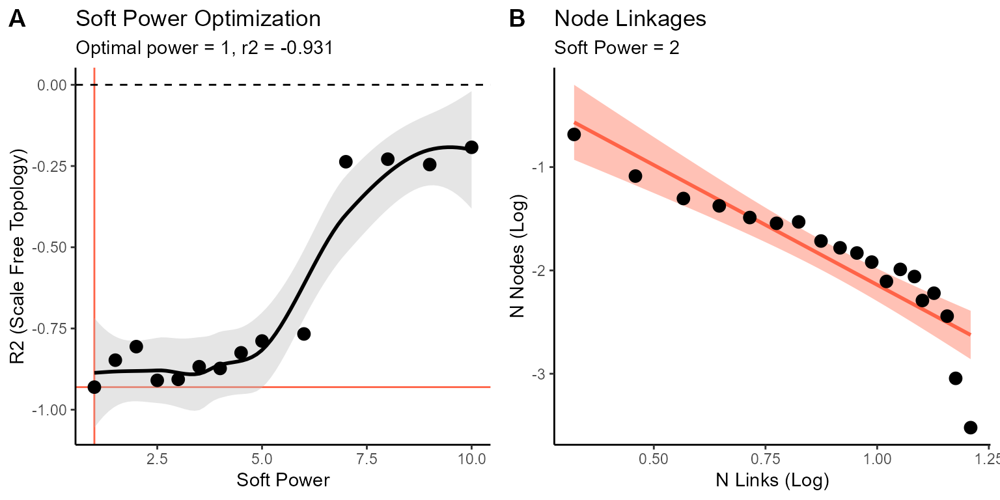
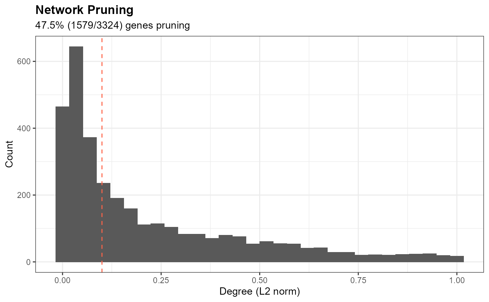
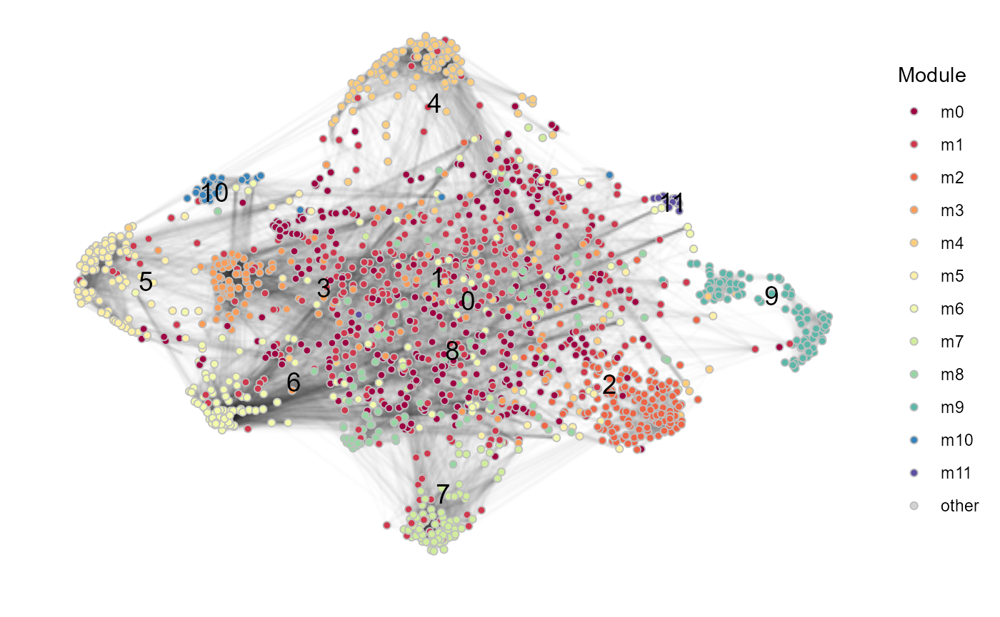

Module Detection
Compiled: 2022-01-19
Module_Detection.RmdLoad Seurat object
For this tutorial we will perform unsupervised module detection and annotation to characterize the biological processes that comprise the Human Gastrulation (Tyser 2021).
We start by reading in the data,
Feature Selection
We begin by identifying features used for downstream module detection. In general, lowly-expressed genes yield poorly constructed networks due to the high degree of sparsity. We offer 3 approaches to identifying genes for module detection:
-
Expression-based selection (“expr”): Feature exceeding a minimal expression fraction (
min_pct) AND features that are highly-variable (FindVariableFeatures) are selected using this criterion. -
Highly-variable genes (“hvg”): Only features that are highly-variable (
FindVariableFeatures) are selected using this criterion. -
Deviance-based selection: Features that are highly deviant are selected using this criterion. Implemented with
scry::devianceFeatureSelection(..., fam = "binomial")
We can see that while there are some genes that overlap between the different approaches, there are many features that are also criterion-specific. In general, our expression-based selection criterion is the most widely encompassing approach, and is set as the default selection method.
# Expression-based feature selection
features_expr <- findNetworkFeatures(object = so.query, method = "expr", min_pct = 0.5)
# Highly-variable genes
features_hvg <- findNetworkFeatures(object = so.query, method = "hvg", n_features = 2000)
# Deviance-based feature selection
features_dev <- findNetworkFeatures(object = so.query, method = "deviance", n_features = 2000)
# examine overlap between feature sets
feature.list <- list(expr = features_expr, hvg = features_hvg, deviance = features_dev)
ggVennDiagram::ggVennDiagram(feature.list) + scale_color_manual(values = rep("white", 3))
Module Detection with SSN Workflow
We can now perform module detection using our scale-free shared-nearest neighbor network (SSN) analysis pipeline, implemented in the runSSN function.
The resulting object contains a cell x feature Seurat object, with the scale-free nearest neighbor graph stored in so.gene@graphs[["RNA_snn_power"]] and the corresponding UMAP embedding in so.gene@reductions[["umap"]].
We can visualize the scale-free optimization and transformation that was performed by calling the scale-free plots that are stored in the output object:
cowplot::plot_grid(so.gene@misc$scale_free$optimization.plot, so.gene@misc$scale_free$distribution.plot$`0.5`,
labels = "AUTO")
Using the UMAP layout and scale-free-transformed shared-nearest-neighbor graph, we can visualize the network connectivity using SSNConnectivity.
plt_connectivity <- SSNConnectivity(so.gene, quantile_threshold = 0.9, raster_dpi = 200)
plt_connectivity$plot_edge + labs(title = "Network Connectivity")
The module membership of each gene is stored in so.gene@meta.data[["seurat_clusters"]] and can be functionally-annotated as-is. However, we have introduced a filtering step to clean up each module by pruning away features with low network degree or connectivity. This is implemented using the pruneSSN function.
# specify pruning threshold [0,1] (low values = less pruning, high values = more pruning)
prune.threshold <- 0.1
# get feature-specific connectivities (wi)
df.wi <- pruneSSN(object = so.gene, graph = "RNA_snn_power", prune.threshold = prune.threshold,
return.df = T)
# visualize
plt.prune <- df.wi %>%
ggplot(aes(x = wi_l2)) + geom_histogram(bins = 30) + geom_vline(xintercept = prune.threshold,
linetype = "dashed", color = "tomato") + labs(x = "Degree (L2 norm)", y = "Count", title = "Network Pruning",
subtitle = paste0(signif(100 * sum(df.wi$wi_l2 <= prune.threshold)/nrow(df.wi), 3), "% (", sum(df.wi$wi_l2 <=
prune.threshold), "/", nrow(df.wi), ") genes pruning")) + theme_miko(grid = T)
print(plt.prune)
# get (pruned) gene module list
mod.list <- pruneSSN(object = so.gene, graph = "RNA_snn_power", prune.threshold = prune.threshold)
str(mod.list)## List of 12
## $ m0 : chr [1:310] "ABCA7" "ABHD10" "AC020915.3" "AC105052.3" ...
## $ m1 : chr [1:368] "A2ML1" "ABCA3" "AC002463.1" "AC002558.1" ...
## $ m2 : chr [1:169] "AATF" "ADSL" "AHSA1" "AIMP2" ...
## $ m3 : chr [1:123] "AC254813.2" "ADCY4" "ADGRL2" "AL158066.1" ...
## $ m4 : chr [1:150] "AC083841.1" "AC098934.1" "AC112206.2" "ACMSD" ...
## $ m5 : chr [1:122] "A2M" "ABHD12" "ADORA3" "AGAP2" ...
## $ m6 : chr [1:131] "ABHD11" "ABHD16A" "AC007608.3" "AC008825.2" ...
## $ m7 : chr [1:116] "AC084033.3" "AC090136.3" "AGTRAP" "AKAP14" ...
## $ m8 : chr [1:105] "AAR2" "AARSD1" "AC018462.1" "AC125232.2" ...
## $ m9 : chr [1:108] "ANLN" "ASF1B" "ASPM" "ATAD2" ...
## $ m10: chr [1:29] "AC104389.5" "AHSP" "ALAD" "ALAS2" ...
## $ m11: chr [1:14] "ACAT2" "ACLY" "DHCR24" "DHCR7" ...An updated version of the connectivity plot can not be generated using the refined gene module sets.
message("Preparing connectivity objects...")
plt_connectivity_with_features <- SSNConnectivity(so.gene, gene.list = mod.list, quantile_threshold = 0.9,
raster_dpi = 200)
plt_connectivity_with_features$plot_network
Finally, we summarize the expression and functional annotation of each gene module using summarizeModules.
# summarize modules
ssn.summary <- summarizeModules(cell.object = so.query, gene.object = so.gene, gene.list = mod.list,
module.type = "ssn", n.workers = parallel::detectCores(), connectivity_plot = plt_connectivity_with_features$plot_edge)
# cluster-level heatmap of module activities
plt.ssn.gene.hm.expr <- heatmaply::heatmaply((ssn.summary$data.heatmap), scale = "column", scale_fill_gradient_fun = scale_fill_miko(),
xlab = "Module", ylab = "Cluster", main = "SSN Module Activity")
plt.ssn.gene.hm.expr
# get list of module-level summary plots
plt.ssn.gene <- ssn.summary$plt.summary
# visualize
plt.ssn.gene$m14## NULL